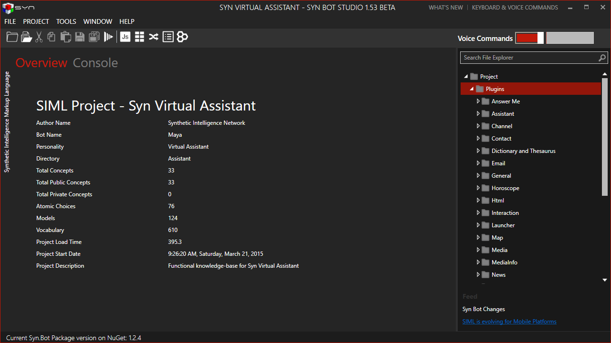

Syn Bot Studio
Syn Bot Studio is an intelligent and beautiful IDE for SIML Bot development. Bot Studio offers all the essential features a developer would want while developing an intelligent Bot.

With 100% compliance with SIML 1.0 Syn Bot Studio is truly a complete SIML development tool that takes off the burden of re-writing codes when SIML specifications are updated.
With Code Analysis, Regular Expression Tester, Script Evaluator and AIML to SIML Converter Bot Studio is the only development tool you’ll need.
Version
Syn Bot Studio is currently in 1.54 Beta stage. Once we have thoroughly tested the Bot Studio and have corrected any and all known bugs reported by users Syn Bot Studio will be republished as a stable product. If you find any Bug please do help us improve by going to Syn Forum and under the section Syn Bot Studio post information regarding the bug you’ve found.
System Requirements
- Windows 7 or Above
- .Net Framework 4.5 or Above
- 1 GB RAM
- 2 GHz Processor
- 250 MB of Disk-space
- 100 MB to 1 GB Free Disk-space for Corporate/Large Projects
Platforms Supported

Windows 7, Windows 8, Windows 8.1 and Windows 10